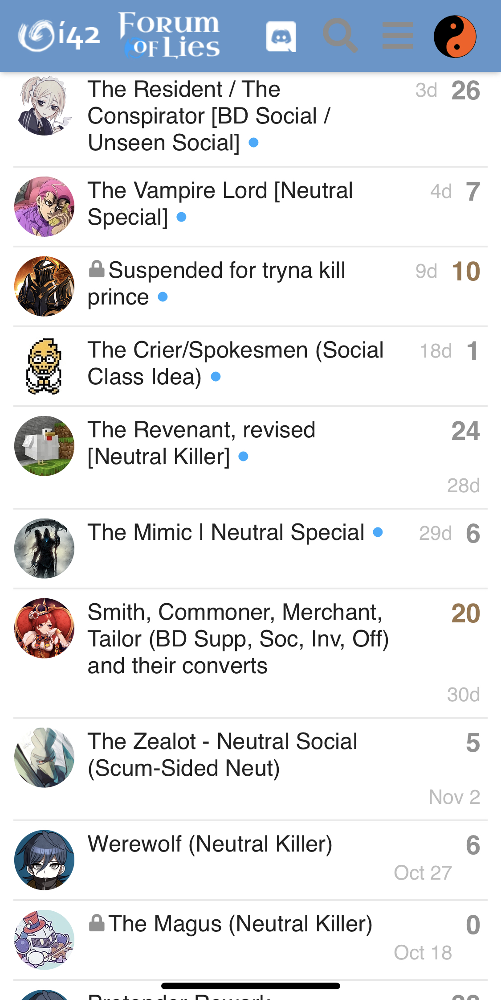

Oh apparently there is a “secret” channel where lorebot announces new games and that was what was referred to, but it seems to not work wholly accurately yet.  Not really a priority feature for like 15 people that have opted in though.
Not really a priority feature for like 15 people that have opted in though.
Skipped all posts after Arete’s wall post. @Kirefitten, can we play ToL with FoL members?
I am still a newb in ToL, so I want to see how quick I die.
I’ve literally been doing this whole RTSDG/FM split thing for years and yeah this is pretty accurate
Also literally this
It used to be even longer too
1 Like
But how can I RWSTFO if that’s against the rules
Anyways tbqh I feel like part of the disconnect comes from there really not being any effort from the Powers That Be™️ to encourage cross-mixing, like, at all
So things end up being pretty separate because there is a clear priority order and no real attempt to not keep things separate despite this
2 Likes
Wdym? Should they say
“If you play ToL you should also try [insert name of strange and completely unrelated forum game]”
Ive done a NFoL mostly for tol’er but fol is just too different from tol to be really interesting for them.
What specific forms of effort to encourage cross-mixing would you like to see?
I’m talking about the forums in general
Not FoL and not FM
Put discussions on forums and social stuff on Discord
Discord is awful for any sort of larger in-depth discussions and ToL really misses out on that nowadays
1 Like
Ever since they stopped encouraging that and killed updates in general it’s really just been two separate entities
1 Like
People try regularly to write down their class ideas here, but every time forumers are reacting really strange on this, so irs natural that most people prefer to stay away. I remember seeing a class suggestion here… and the whole reaction was a long discussion how bad the fol class was with the same name. Or other off-topic discussions which have nothing to do with the topic of the thread.

A: This is hardly “regularly” tbh
B: That’s the only real example of this, isn’t actually really supported by i42, and is definitely not enough to justify the costs of the forums
C: The incidence of off-topic discussion here is certainly increased by the lack of any other forms of cross-polination
Sorry? We dont have off-topic in the discord except of in off-topic
Not sure how that’s relevant…?
In fairness regarding this point, it’s not like people are constantly posting class suggestions on the Discord or anything
That literally helps my point
1 Like
I just personally would wish that serious discussions wouldnt be always killed by memes and off-topic and people who dont even know what they are talking about. Then it would make fun to discuss here
There’s no effort to promote discussion here in the first place
And as this is a recent problem, I maintain that losing that is more likely a cause of this any any sort of intrinsic issue.
1 Like
Its just natural.
If you can discuss without being distracted elsewhere, why should they want to do it here